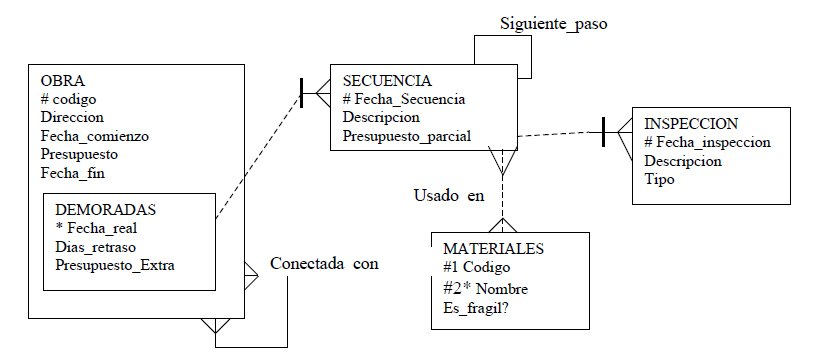

|
Se pretende modelar el funcionamiento de las obras que lleva adelante uan cierta compañía constructora.
Tenemos así un modelo Entidad/Relación donde se recogen las obras que se realizan.
Algunas de ellas no se llevan a cabo en el plazo previsto y de ellas guardamos el motivo de la demora, la desviación en el presupuesto y exactamente el número de días de retraso.
Estas obras están unas conectadas con otras, por ejemplo, para hacer el desmonte de una parcela antes hay que construir un vial de acceso a dicha parcela.
Esta conexión no tiene restricciones de orden: cada obra puede estar conectada con otras muchas.
Para intentar corregir las obras demoradas se fijan unos plazos intermedios que determinan una secuencia de pasos.
En cada paso de la secuencia se guarda la información que permita hacer un seguimiento más estrecho.
Dicho seguimiento se realiza mediante unas inspecciones periódicas en cada uno de estos pasos intermedios previamente establecidos.
Nunca se avisa de estas inspecciones, ni de su número en cada paso intermedio ni de cuando tendrán lugar.
Este modelo está recogido en el siguiente diagrama:

No obstante nos hemos encontrado con que el anterior administrador de la base de datos, creó las
tablas pero con errores que debemos corregir.
Además hay que tener en cuenta las siguientes restricciones:
- En las Obras Demoradas, si el campo Dias_Retraso es mayor de 125 entonces el Presupuesto Extra será mayor de
12000 Euros.
- Todas las claves primarias deben ser simples y de tipo NUMBER.
- Nunca consideramos el comienzo simultáneo de dos obras en la misma dirección. Si dos obras han de empezar el
mismo día y en el mismo sitio se considerará como una sóla para ahorrar costes de personal.
- Usar el nombre de las relaciones como identificador de los atributos o tablas a que de lugar su implementación.
- Las tablas disponen de algunas filas ya insertadas, por lo que si alguna de ellas causa problemas con las constraints que se añada, se deberán cambiar sus valores para que cumplan las condiciones establecidas.
- Si los valores se han de mover de tabla, realizar operaciones con INSERT o UPDATE para conservar dichos valores.
- No borrar ninguna tabla del modelo para volver a crearla.
|